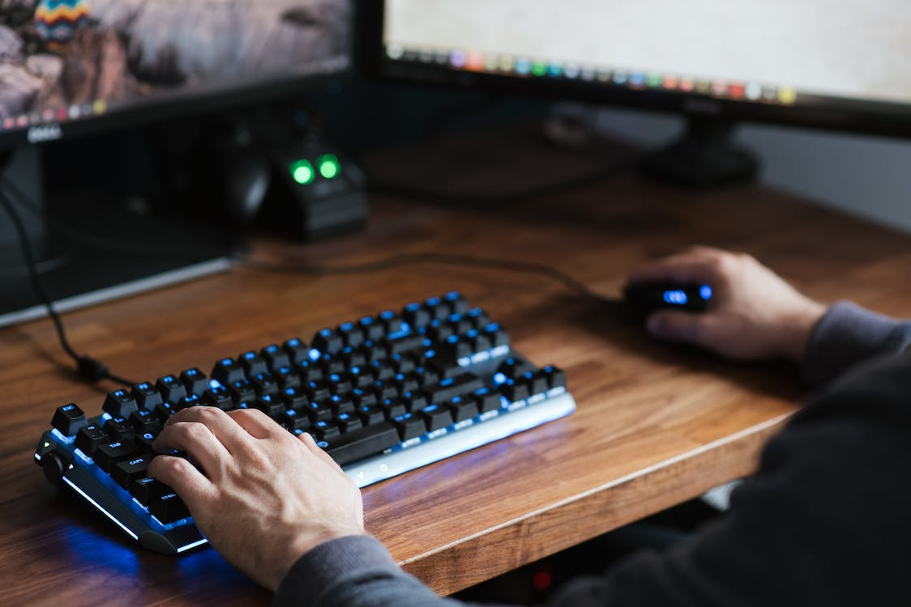
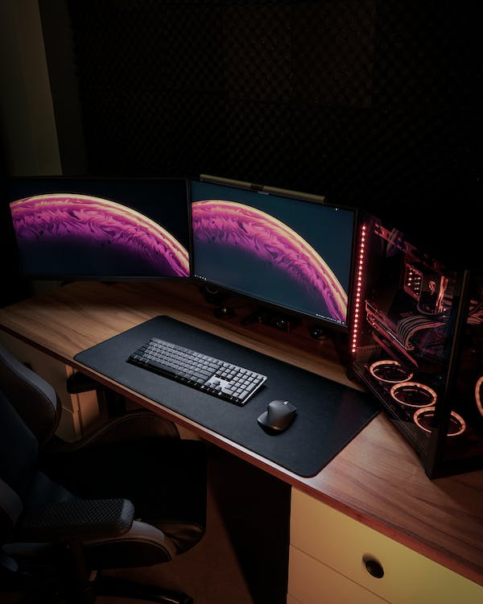

Products
| PRODUCT 1a Mechanical keyboards and mice offer superior tactile feedback, faster response times, and increased durability compared to their conventional counterparts. The satisfying key clicks and precise mouse movements enhance typing and gaming experiences, reducing strain on wrists and providing long-lasting performance. |
|
|  | Product 1b Mechanical keyboards and mice offer enhanced tactile feedback and responsiveness, providing a more comfortable and precise typing and gaming experience. Their durable build ensures prolonged use, while customizable keys and programmable features boost productivity and gaming performance |
|  | Product 22G Gaming computers, compared to standard PCs, offer several advantages for gaming enthusiasts. They come equipped with powerful hardware, including high-end CPUs, dedicated graphics cards, and ample RAM, allowing for smooth gameplay and visually stunning graphics. Gaming PCs support high frame rates, reducing input lag and enhancing overall performance. Additionally, gaming computers often feature advanced cooling systems to handle intense processing demands. |